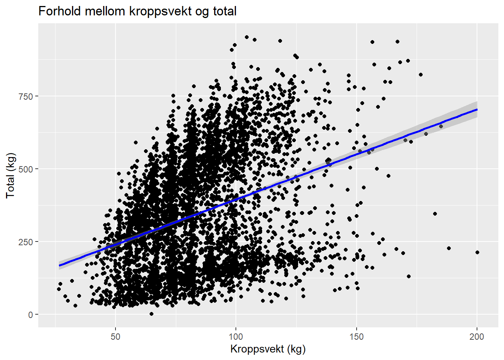
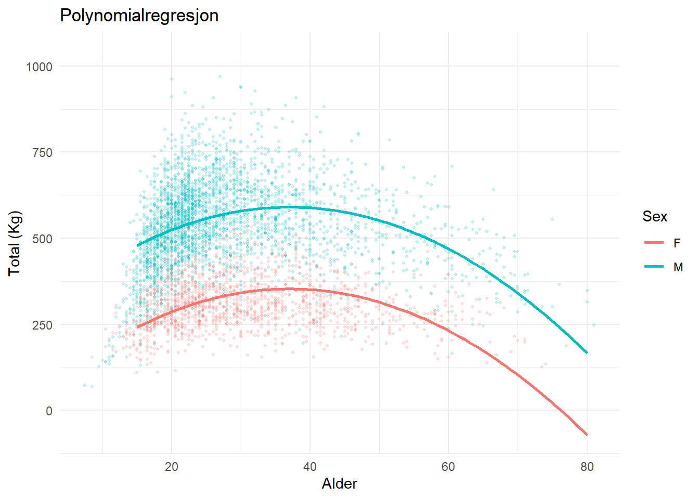
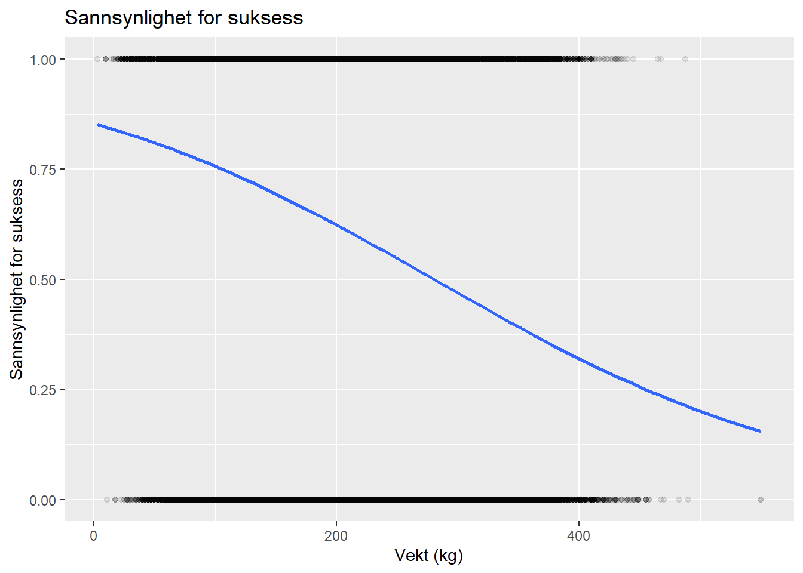
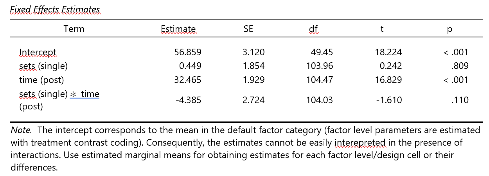
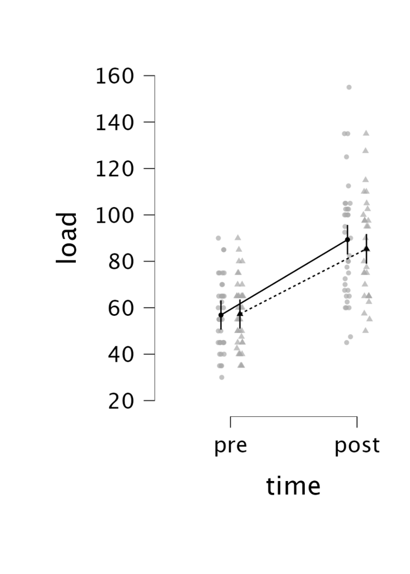

Arbeidskrav 3: Statistisk analyse av Openpowerlifting datasettet
Author
Ketil B., Laurits H., Herman E. og Theodor S.
Published
October 30, 2025
1 Beskrive sammenhenger
Første del av arbeidskravet tar utgangspunkt i “Openpowerlifting” datasettet.
Begreper som brukes videre i denne analysen:
Total: Summen av beste løftet i knebøy, benkpress og markløft sammenlagt, uttrykt i antall kilogram (eksempel: 150kg knebøy, 100 kg benkpress, 200 kg markløft = total på 450 kg)
Maksimalstyrke: Brukes synonymt med total i denne analysen
Utstyrsfritt: Det innebærer at man kun kan bruke et enkelt lag løftebelte (10 - 13mm bredde), myke knevarmere, håndleddsstøtter og drakt uten støtte. Alt annet utstyr er ikke tillatt.
1.1 Sammenhengen mellom to kontinuerlige variabler (Total og kroppsvekt)
Sammenhengen mellom to kontinuerlige variabler kan beskrives ved hjelp av korrelasjon og lineær regresjon. Korrelasjonskoeffisienten (r) viser styrken og retningen på den sammenhengen mellom de to variablene, og varierer mellom -1 og 1. I dette tilfellet er korrelasjonen mellom kroppsvekt og total løftet mengde r=0.369r, noe som indikerer en moderat positiv sammenheng. Løftere med høyere kroppsvekt har en tendens til å løfte mer totalt.
Pearson's product-moment correlation
data: sample.powerlifting$TotalKg and sample.powerlifting$BodyweightKg
t = 25.48, df = 4998, p-value < 2.2e-16
alternative hypothesis: true correlation is not equal to 0
95 percent confidence interval:
0.3143008 0.3633702
sample estimates:
cor
0.3390661
Call:
lm(formula = TotalKg ~ BodyweightKg, data = sample.powerlifting)
Residuals:
Min 1Q Median 3Q Max
-492.42 -178.23 5.51 156.56 542.93
Coefficients:
Estimate Std. Error t value Pr(>|t|)
(Intercept) 85.7888 10.5539 8.129 5.43e-16 ***
BodyweightKg 3.0933 0.1214 25.480 < 2e-16 ***
---
Signif. codes: 0 '***' 0.001 '**' 0.01 '*' 0.05 '.' 0.1 ' ' 1
Residual standard error: 186.7 on 4998 degrees of freedom
Multiple R-squared: 0.115, Adjusted R-squared: 0.1148
F-statistic: 649.2 on 1 and 4998 DF, p-value: < 2.2e-16

I en lineær regresjonsmodell gir i tillegg et mål på hvor mye den avhengige variabelen (TotalKg) endrer seg når den uavhengige variabelen (BodyweightKg) øker.
I modellen TotalKg = 79.93 + 3.35 × BodyweightKg betyr dette at totalen i gjennomsnitt øker med omtrent 3.35 kg for hver ekstra kilo kroppsvekt.
Det finnes en direkte kobling mellom korrelasjonskoeffisienten og regresjonsmodellen: b1=r×(sy/sx), der s(y) og s(x) er standardavvikene til henholdsvis TotalKg og BodyweightKg. Når vi beregner denne forventede stigningstallet ut fra korrelasjonen, får vi nøyaktig samme verdi som i regresjonsmodellen (b_expected = 3,35). Dette viser at analysen er konsistent, og at korrelasjon og regresjon beskriver den samme lineære sammenhengen. Samlet viser analysen en signifikant, men moderat lineær sammenheng mellom kroppsvekt og total løfteprestasjon.
# Calculate correlation between bodyweight and total liftr <-cor(sample.powerlifting$BodyweightKg, sample.powerlifting$TotalKg)# Calculate standard deviations of both variablessd_y <-sd(sample.powerlifting$TotalKg) # standard deviation of Total (Y)sd_x <-sd(sample.powerlifting$BodyweightKg) # standard deviation of Bodyweight (X)# Compute the expected slope (b) from the correlationb_expected <- r * (sd_y / sd_x)# Display the expected regression coefficientb_expected
Det er godt etablert at både kjønn og alder har en effekt på maksimalstyrke. Menn løfter i gjennomsnitt med kvinner, og alder kan ha både en negativ og positiv innvirkning på maksimalstyrke.
Fra et fysiologisk standpunkt kan vi anta at det vil være et kurvilineært forhold mellom total, kjønn og alder, ettersom man vil bli sterkere opp til en viss alder, før man senere vil bli svakere igjen. Vi vil også forvente at menn og kvinner vil registrere ulike totaler på bakgrunn av ulik styrke.
Siden “openpowerlifting” datasettet inneholder over tre millioner rader, må vi filtrere dataene slik at de er mer håndterbare å lage modeller og grafer med. Vi valgte dermed å filtrere et utvalg på 5000 observasjoner.
Vi testet både en lineær og en polynomial regresjonsmodell. Det viste seg at den polynomiale modellen var mer passende, ettersom den lineære modellen viste en negativ korrelasjon mellom alder og total, som er fysiologisk svært usannsynlig (en 15-åring ville vært sterkere enn en 25 åring i gjennomsnitt med den lineære modellen). Ved bruk av den polynomiale modellen derimot, ser at vi totalen øker med økende alder til et visst punkt, før den igjen synker, og indikerer at det er et kurvilineært forhold.
#Filtrerer datasettet slik at det er mer håndterbart og gjelder en mer homogen målgruppepowerlifting.clean <- openpowerlifting |>filter(!is.na(TotalKg), #Har en registrert total TotalKg >0, Equipment =="Raw", #Utstyrsfritt!is.na(Tested), #Dopingtestet Sex %in%c("M", "F"),#Kun kvinner og menn!is.na(Dots) )#Vi tar et tilfeldig utvalg "powerlifting.clean"set.seed(123)sample.powerlifting <- powerlifting.clean |>sample_n(5000)
Nå som vi har filtrert datasettet, kan vi lage en regresjonsmodell og en graf.
Merk: Med denne regresjonsmodellen gjør vi en antagelse at alder har en lik effekt på maksimalstyrke uavhengig av kjønn
Variabel
Estimat
p-verdi
(Intercept)
124.543
<0.001
SexM
143.822
<0.001
Age
9.553
<0.001
I(Age^2)
-0.155
<0.001
1.2.1 Tolkning av regresjonsmodellen
Vi ser fra modellen at skjæringspunktet er 124.5 kg, som betyr at gjennomsnittlig kvinne vil ha en total på 124.5 kg ved en alder av 0. Dette er det matematiske utgangspunktet til modellen, og i praksis ikke nyttig og unøyaktig siden datasettet ikke inneholder data på så unge utøvere. Vi ser også at menn i gjennomsnitt løfter 143.8kg mer enn kvinner, og at for hver økning i alder med antall år, vil vi få en økning på 9.6kg på totalen. Koeffisienten for Age^2 (-0.15) viser at det er et ikke lineært forhold mellom alder og maksimalstyrke. Etter en viss alder, så vil styrken avta.
Alle koeffisientene har en p-verdi på <0.001, som betyr at både kjønn og alder har en statistisk signifikant effekt på styrke. Modellen kan forklare omtrentlig 14% av variasjonen i total vekt løftet (Justert R-squared = 0.14), som tyder på at andre faktorer enn kjønn og alder spiller inn på maksimalstyrke.
1.2.2 Graf 2: Kurvilineær graf av sammenhengen mellom total, kjønn og alder
Graf 2: Figuren viser hvordan totalen varierer med alder for menn og kvinner, og når en topp rundt en alder av 30 -35 år, før den gradvis avtar.

1.3 Hvordan kan vi tolke estimatet i en generalisert lineær modell hvor den avhengige variabelen er enten 1 eller 0? Hva betyr «link-function» i denne sammenhengen og hva gjør den?
En generalisert lineær modell (GLM) er en type modell som lar oss jobbe med data som ikke er normalfordelt. I vårt tilfelle, så kan vi bruke en logistisk regresjonsmodell som er en underkategori av GLM, for å se på log-oddsen for et binomialt utfall, som godkjent og ikke-godkjent løft.
Vi tar utgangspunkt i om løfteren har fått det tredje løftet sitt i markløft godkjent eller ikke. Variabelen”Deadlift3Kg” i datasettet blir brukt for å lage vår binære utfallsvariabel “Deadlift3_success”. I openpowerlifting-datasettet, så har et godkjent løft en positiv verdi (eks: 120), og et ikke-godkjent løft en negativ verdi (eks: -120). Vi kan dermed definere utfallsvariabelen som 1 for godkjent løft hvis variabelen “Deadlift3Kg” > 0, og som 0 for ikke-godkjent løft hvis “Deadlift3Kg” < 0. Hvis verdien til variabelen er “NA”, betyr det at løftet ikke ble forsøkt, og disse verdiene blir ekskludert fra modellen.
I modellen vår blir den uavhengige variabelen absolutt vekt forsøkt i markløft (Deadlift3attempt). Vi kan anta at med økende vekt, så vil sannsynligheten for å få et godkjent løft synke. Vi vil dermed forvente en negativ koeffisient.
term
estimate
std.error
statistic
p.value
(Intercept)
1.763
0.008
220.813
0
Deadlift3attempt
-0.006
0.000
-167.043
0

Vi får følgende estimater i modellen vår, med skjæringspunkt = 1,7 og et stigningstall = -0.006. Skjæringspunktet forteller oss log-oddsen for å få et godkjent løft når den uavhengige variabelen er 0, altså når man løfter 0 kg. Dette er i praksis absurd, og ikke nyttig. Når vi ser på stigningstallet, så ser vi at den har en negativ verdi. Det betyr at for hver økning i x (antall kg), så vil log-oddsen reduseres med 0.006. På odds-skalaen vil det bety at oddsen multipliseres med exp(-0.006) = 0.994. Med andre ord, vil oddsen for å lykkes med tredje forsøket i markløft reduseres med ca. 0.6% per kg man øker vekten med.
Merk: Modellen predikerer kun basert på vekt forsøkt, og tar ikke hensyn til andre faktorer som treningserfaring, muskelmasse, teknikk og så videre.
I den logistiske regresjonsmodellen, så ønsker vi å se på sannsynligheten for et utfall ved hjelp av en lineær regresjonsmodell. Problemet med dette, er at sannsynligheten må alltid ha en verdi mellom 0 og 1, og en lineær regresjon kan gi oss verdier langt utenfor dette spennet. “Link-function” fungerer som en bro, ved at den transformerer sannsynligheter om til log-odds, som kan være verdier utenfor 0 til 1. Dermed kan vi fortsatt bruke den kraftige lineære regresjonsmodellen selv på binære utfall, ved hjelp av denne funksjonen.
2 Predikere observasjoner
2.0.1 Bruk data fra datasettet strengthvolume og lag en prediksjonsmodell for legext basert på legpress.
#Vi må først filtrere datasettetLegext_modell <- strengthvolume |>filter(exercise %in%c("legpress", "legext")) |>pivot_wider(names_from = exercise,values_from = load)#Prediksjonsmodell for legext basert på legpressext.m1 <-lm(legext ~ legpress, data = Legext_modell)
2.1 Bruk data fra et tidspunkt (time) og et treningsvolum (sets)
2.1.1 Hvordan spiller kjønn (sex) inn på prediksjonen, hvordan kan du bruke kjønn for å si noe om prediksjoner innad kjønn og i gjennomsnitt i begge kjønn?
Vi trenger to modeller for å svare på dette spørsmålet. Den første modellen, “ext.m2” har ingen interaksjonseffekt mellom kjønn og legpress på legextension, mens “ext.m3” har en interaksjonseffekt mellom kjønn og legpress på legextension. La oss se hva modellene viser oss, og hvilken som er mest egnet.
Tabell 1: Prediksjoner fra de ulike modellene
Model
Prediction
m1 (average)
56.21
m2 (female)
51.12
m2 (male)
67.54
m3 (female)
50.48
m3 (male)
68.64
I tabell 1 ser vi at m2 og m3 viser tydelige forskjeller i styrke i legextension mellom menn og kvinner. Dette er forventet, ettersom menn er i gjennomsnitt sterkere enn kvinner. Likevel, ser det ut til at m3 og m2 gir nesten nøyaktig like prediksjoner, som betyr at mest sannsynlig er ikke interaksjonseffekten særlig viktig. Vi kan dermed si at m2 er tilstrekkelig for våre behov. I modell m1, som ikke inkluderer kjønn, ser vi at vi får et gjennomsnitt som ligger mellom verdiene til menn og kvinner.
2.1.2 Modellen gir deg et estimat, men for en gitt verdi på legpress, hva sier modellen om i hvilket område vi kan forvente å finne nye observasjoner?
Tabell 2: 95% prediksjonsintervall for legextension ved legpress = 150 kg
Sex
Prediction
Lower
Upper
Female
51.12
27.01
75.23
Male
67.54
43.37
91.71
Prediksjonsintervallet vårt forteller oss hvilke verdier vi kan forvente for legextension når en deltaker klarer 150 kg i legpress, både for kvinnelig og mannlig kjønn.
Hvis en kvinne tar 150kg i legpress, forventer vi at nye observasjoner forkvinner har en 95% sannsynlighet for å få en legextension verdi mellom 27 og 75kg. Modellen viser oss en gjennomsnittlig prediksjon på 51kg. Hvis en mann tar 150 kg i legpress, forventer vi at nye observasjoner for menn har en 95% sannsynlighet for å få en legextension verdi mellom 43 og 91 kg. Modellen viser oss en gjennomsnittlig prediksjon på 68 kg.
Prediksjonsintervaller viser oss at det er et stort spenn av mulige verdier for legextension når legpress er 150kg, for begge kjønn. Dette kan tyde på store individuelle forskjeller, selv ved samme legpress verdier.
3 Trekke slutninger
3.1 Bruk datasettet strengtvolume og formuler en modell som gir oss et estimat på forskjell i gjennomsnitt mellom sets i forandring fra tidspunkt pre til tidspunkt post i legext. Gi begrunnelse til valg av modell og håndtering av data.
Trinnvis beskrivelse av oppgaveløsning:
Vi løser oppgaven i JASP.
· Vi begynte å redigere dataen og gi tallverdier. Først inkluderte vi kun “pre” og “post” i “time”, samt ga de en tallverdi 1 – 2. i “exercise” fjernet vi alle øvelser unntatt legext. · Videre gikk vi inn på linear mixed model, satte “load” som dependent variable, “sets” og “time” i fixed effects variables, og “participants” i random effects grouping factors. · Så satte vi inn “sets” og “time”, og “sets x time” inn som ulike model components · I random components valgte vi å se på intercept . · I options huket vi av model summary og fixed effects estimates. · I plots for å få selve modellen satte vi inn «time» i den horisontale aksen, «sets» i seperate lines for å skille mellom pre og post, og «participants» inn i background data show. · I tillegg førte vi inn i plots for å illustrere med en graf.

Tabell 3: Mixed effect modellen

Graf 3: Linjediagram av mixed-effect modellen. Endring i belastning fra pre- til post. Stiplet linje er single sett, og heltrukket linje er multiple sets
3.1.1 Hvordan kan vi bruke regresjonsmodellen for å si noe om populasjonen som dataene kommer fra?
Vi kan bruke regresjonsmodellen for å si noe om at det er en klar tidseffekt fra pre til post tester. Observasjonene fra modellen viser oss også forskjellen mellom økning i single og multiple sets fra pre til post på modellen ser vi at økningen er større i flere sets. Forskjellen mellom single og multiple sets på baseline er ubetydelig (p=0.809).